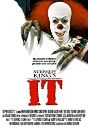
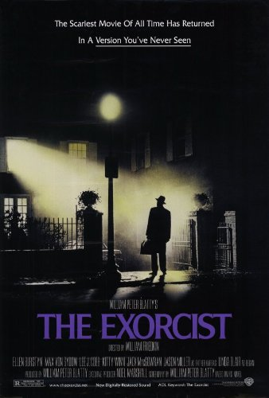

| Title |
Release Year |
Director |
IMDB Rating/10 |
Subgenre |
Lead Actor(s) |
Plot Summary |
Runtime (minutes) |
Halloween |
1978 |
John Carpenter |
7.8 |
Slasher |
Jamie Lee Curtis
Nick Castle |
On a cold Halloween night in 1963, six year old Michael Myers brutally murdered his 17-year-old sister, Judith. He was sentenced and locked away for 15 years. But on October 30, 1978, while being transferred for a court date, a 21-year-old Michael Myers steals a car and escapes Smith's Grove. He returns to his quiet hometown of Haddonfield, Illinois, where he looks for his next victims. |
91 |
Halloween |
2018 |
David Gordon Green |
6.7 |
Slasher |
Jamie Lee Curtis
Nick Castle |
It's been 40 years since Laurie Strode survived a vicious attack from crazed killer Michael Myers on Halloween night. Locked up in an institution, Myers manages to escape when his bus transfer goes horribly wrong. Laurie now faces a terrifying showdown when the masked madman returns to Haddonfield, Ill. -- but this time, she's ready for him. |
104 |
| Friday the 13th |
1980 |
Sean S. Cunningham |
6.5 |
Slasher |
Adrienne King
Betsy Palmer
Ari Lehman
Kevin Bacon
Jeannine Taylor
Harry Crosby
Mark Nelson |
Crystal Lake's history of murder doesn't deter counselors from setting up a summer camp in the woodsy area. Superstitious locals warn against it, but the fresh-faced young people -- Jack, Alice, Bill, Marcie, and Ned -- pay little heed to the old-timers. Then they find themselves stalked by a brutal killer. As they're slashed, shot and stabbed, the counselors struggle to stay alive against a merciless opponent. |
95 |
| The Shining |
1980 |
Stanley Kubrick |
8.4 |
Psychological |
Jack Nicholson
Shelley Duvall
Danny Lloyd |
Jack Torrance becomes winter caretaker at the isolated Overlook Hotel in Colorado, hoping to cure his writer's block. He settles in along with his wife, Wendy, and his son, Danny, who is plagued by psychic premonitions. As Jack's writing goes nowhere and Danny's visions become more disturbing, Jack discovers the hotel's dark secrets and begins to unravel into a homicidal maniac hell-bent on terrorizing his family. |
146 |
Get Out |
2017 |
Jordan Peele |
7.7 |
Thriller |
Daniel Kaluuya
Allison Williams
Bradley Whitford
Catherine Keener |
Now that Chris and his girlfriend, Rose, have reached the meet-the-parents milestone of dating, she invites him for a weekend getaway upstate with Missy and Dean. At first, Chris reads the family's overly accommodating behavior as nervous attempts to deal with their daughter's interracial relationship, but as the weekend progresses, a series of increasingly disturbing discoveries lead him to a truth that he never could have imagined. |
104 |
| The Boy |
2016 |
William Brent Bell |
6 |
Mystery |
Lauren Cohan
James Russell
Jett Klyne |
A young American named Greta takes a job as a nanny for an 8-year-old boy in a remote English village. To her surprise, Greta learns that the child of her new employers is a life-size doll. They care for the doll as if it was human, which helps the couple to cope with the death of their own son 20 years earlier. When Greta violates a list of strict rules, a series of disturbing and inexplicable events bring her worst fears to life, leading her to believe that the doll is alive. |
98 |
| Lights Out |
2016 |
David Sandberg |
6.3 |
Mystery |
Teresa Palmer
Maria Bello
Gabriel Bateman |
When Rebecca left home, she thought that her childhood fears were behind her. As a young girl growing up, she was never really sure of what was real when the lights went out at night. Now, her little brother Martin is experiencing the same unexplained and terrifying events that jeopardized her safety and sanity. Holding a mysterious attachment to their mother, a supernatural entity has returned with a vengeance to torment the entire family. |
81 |
| It |
1990 |
Tommy Lee Wallace |
6.9 |
Drama |
Emily Perkins
Harry Anderson
John Ritter
Richard Thomas
Tim Reid
Adam Faraizl |
In 1960, seven preteen outcasts fight an evil demon that poses as a child-killing clown. Thirty years later, they reunite to stop the demon once and for all when it returns to their hometown. |
192 |
It |
2017 |
Andres Muschietti |
7.4 |
Drama |
Finn Wolfhard
Sophia Lillis
Bill Skarsgard
Jaeden Lieberher
Jack Dylan Grazer
Wyatt Oleff
Chosen Jacobs
Jeremy Ray Taylor |
Seven young outcasts in Derry, Maine, are about to face their worst nightmare -- an ancient, shape-shifting evil that emerges from the sewer every 27 years to prey on the town's children. Banding together over the course of one horrifying summer, the friends must overcome their own personal fears to battle the murderous, bloodthirsty clown known as Pennywise. |
135 |
| The Exorcist |
1973 |
William Friedkin |
8 |
Supernatural |
Linda Blair
Max von Sydow
Ellen Burstyn
Jason Miller |
When young Regan starts acting odd -- levitating, speaking in tongues -- her worried mother seeks medical help, only to hit a dead end. A local priest, however, thinks the girl may be seized by the devil. The priest makes a request to perform an exorcism, and the church sends in an expert to help with the difficult job. |
132 |
| Hereditary |
2018 |
Ari Aster |
7.3 |
Drama |
Milly Shapiro
Alex Wolff
Toni Collette
Gabriel Byrne |
When the matriarch of the Graham family passes away, her daughter and grandchildren begin to unravel cryptic and increasingly terrifying secrets about their ancestry, trying to outrun the sinister fate they have inherited. |
127 |
| The Cabin in the Woods |
2011 |
Drew Goddard |
7 |
Mystery |
Kristen Conolly
Chris Hemsworth
Anna Hutchison
Fran Kanz
Jesse Williams |
When five college friends arrive at a remote forest cabin for a little vacation, little do they expect the horrors that await them. One by one, the youths fall victim to backwoods zombies, but there is another factor at play. Two scientists are manipulating the ghoulish goings-on, but even as the body count rises, there is yet more at work than meets the eye. |
95 |
A Quiet Place |
2018 |
John Krasinski |
7.6 |
Thriller |
John Krasinski
Emily Blunt
Millicent Simmonds
Noah Jupe |
If they hear you, they hunt you. |
91 |
Jaws |
1975 |
Steven Spielberg |
8 |
Drama |
Roy Schneider
Richard Dreyfuss
Robert Shaw
Lorraine Gary |
When a young woman is killed by a shark while skinny-dipping near the New England tourist town of Amity Island, police chief Martin Brody wants to close the beaches, but mayor Larry Vaughn overrules him, fearing that the loss of tourist revenue will cripple the town. Ichthyologist Matt Hooper and grizzled ship captain Quint offer to help Brody capture the killer beast, and the trio engage in an epic battle of man vs. nature. |
130 |
| Hush |
2016 |
Mike Flanagan |
6.6 |
Thriller |
Kate Siegel
John Gallagher Jr.
Michael Trucco |
A deaf writer who retreated into the woods to live a solitary life must fight for her life in silence when a masked killer appears in her window. |
87 |
| Jennifer's Body |
2009 |
Karyn Kusama |
5.2 |
Comedy |
Megan Fox
Amanda Seyfried
Adam Brody
Johnny Simmons |
When a demon takes possession of her, high-school hottie Jennifer turns a hungry eye on guys who never stood a chance with her before. While evil Jennifer satisfies her appetite for human flesh with the school's male population, her nerdy friend, Needy, learns what's happening and vows to put an end to the carnage. |
107 |